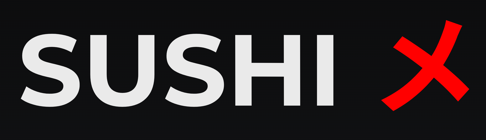

Дата вступления в силу: актуальная версия размещена на сайте SushiX OÜ
Настоящие Условия регулируют использование услуг, предоставляемых компанией SushiX OÜ, зарегистрированной в Эстонской Республике.
Компания осуществляет деятельность по продаже и доставке готовых блюд (включая суши, роллы и сопутствующие продукты).
Оформляя заказ, пользователь подтверждает, что ознакомился и согласен с настоящими Условиями.
Заказ считается подтверждённым после отправки клиенту электронного чека на указанный адрес электронной почты.
Электронный чек направляется автоматически в течение нескольких минут после оформления заказа. В отдельных случаях доставка письма может быть задержана или письмо может быть классифицировано почтовым сервисом как «спам».
Все цены указаны в евро (EUR) и включают применимые налоги, если не указано иное.
Доступные способы оплаты:
При оплате через Stripe списание средств происходит в момент подтверждения заказа.
Компания не хранит и не обрабатывает данные банковских карт. Все платежи обрабатываются сертифицированным платёжным провайдером Stripe.
Доставка осуществляется исключительно в пределах Harku vald, деревня Tiskre (Эстония).
Также доступен самовывоз.
Выбранное клиентом время доставки или самовывоза является ориентировочным временным интервалом и может изменяться в зависимости от операционных, дорожных и иных факторов.
Компания не гарантирует точное время доставки.
В случае отсутствия отдельных позиций Компания вправе:
В отдельных случаях может быть предоставлен компенсационный промокод.
В случае задержки более 15 минут при доставке или более 10 минут при самовывозе компания вправе предоставить компенсационный промокод.
Предоставление компенсации не является признанием ответственности.
Заказ может быть отменён только до начала его приготовления.
Компания вправе отказать в отмене, если продукты уже были закуплены или приготовление заказа началось.
В пределах, допускаемых применимым законодательством, Компания не несёт ответственности за косвенные, случайные или последующие убытки, связанные с использованием сервиса.
Настоящие положения не ограничивают ответственность, которую нельзя исключить по законодательству Эстонии или Европейского Союза.
Компания оставляет за собой право в любое время изменять настоящие Условия.
Актуальная версия всегда доступна на сайте и вступает в силу с момента публикации.
Оператором персональных данных является SushiX OÜ, действующая в соответствии с Регламентом (ЕС) 2016/679 (GDPR) и законодательством Эстонии.
Мы можем обрабатывать следующие персональные данные:
Персональные данные используются исключительно для:
Обработка данных осуществляется на основании:
Платежи обрабатываются через Stripe, который является независимым оператором платёжных данных.
Компания не имеет доступа к полным данным банковских карт и не хранит их.
Персональные данные могут передаваться:
Данные не продаются и не используются в маркетинговых целях третьими лицами.
Персональные данные хранятся только столько, сколько необходимо для:
Компания применяет разумные технические и организационные меры для защиты персональных данных от несанкционированного доступа, изменения, утраты или уничтожения.
Заказ может быть отменён только до начала его приготовления.
Если приготовление началось или продукты уже закуплены, отмена может быть невозможна.
Возврат осуществляется в следующих случаях:
Возврат производится через Stripe или исходный способ оплаты.
В случае отсутствия отдельных товаров возможен:
Компания может по своему усмотрению предоставить компенсационный промокод в случае задержек, ошибок или иных нарушений сервиса.
Такие компенсации предоставляются на добровольной основе и не являются признанием ответственности.
Открытие необоснованного чарджбэка без предварительного обращения в Компанию может привести к ограничению возможности дальнейших заказов.